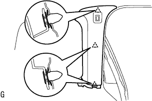

ルーフ ヘッドライニングASSY 取り外し |
| 1. リヤシートバックASSY RH取りはずし（リヤシート分割可倒式） |
| 2. リヤシートバックASSY LH取りはずし（リヤシート分割可倒式） |
リヤシートバツクを前倒位置にする。
 |
ボルト2本取り付け部のクリップをはずす。
 |
リヤシートバツクカバー下部をめくりボルト2本をはずし、リヤシートバツクを取りはずす。
| 3. リヤシートクッションASSY取りはずし（リヤシート分割可倒式） |
リヤシートクッションASSY前側をリヤシート クッション ロック ストライカにロックさせる。
 |
リヤシートバックヒンジRHよりスナップリングを取りはずす。
リヤシートクッションASSY右側ブラケットの、リヤシートヒンジRHを引き抜いて取りはずす。
 |
ボルトをはずし、リヤシ－トヒンジLHを取りはずす。
リヤシートクッションASSYのリヤシート フックASSY RHを引き、リヤシートクッションASSY前部のかん合をはずす。
リヤシートベルトを、リヤシートクッションカバー & パッド後部のゴムバンドに通す。
リヤシートクッションASSYを取りはずす。
| 4. リヤシートバツクASSY取りはずし（駆動方式4WD） |
 |
リヤシートバックを前倒位置にする。
クリップリムーバーを使用して、クリップ2個をはずす。
|
リヤシートバックカバーをめくる。
ボルト2本をはずし、リヤシートバックASSYを取りはずす。
| 5. リヤシートクッションASSY取りはずし（駆動方式4WD） |
 |
クリップのレバーを図の方向に押して、リヤシートクッションASSYの前端部を持ち上げ、クリップのかん合をはずす。
フックのかん合をはずす。
シートベルトをはずし、リヤシートクッションASSYを取りはずす。
| 6. フロントドアスカッフ プレート RH取りはずし |
 |
手で上方に引きながらツメのかん合をはずし、フロントドアスカッフプレートRHを取りはずす。
| 7. カウルサイドトリム ボード RH取りはずし |
ツメおよびスタッドのかん合をはずし、カウルサイドトリムボードを取りはずす。
| 8. フロントドア オープニングトリム ウェザストリップ RH取りはずし |
フロントドアオープニングトリムウェザストリップRHを取りはずす。
| 9. フロントドアスカッフ プレート LH取りはずし |
 |
手で上方に引きながら、車両後方からクリップおよびツメのかん合をはずし、フロントドアスカッフプレートLHを取りはずす。
| 10. デッキサイドトリム カバー FR LH取りはずし |
 |
手で車両前方に引きながらクリップおよびツメのかん合をはずし、デッキサイドトリムカバーFR LHを取りはずす。
| 11. リヤドア オープニングトリム ウェザストリップ LH取りはずし |
リヤドアオープニングトリムウェザストリップLHを取りはずす。
| 12. バックドア ウエザストリップ取りはずし |
バックドアウェザストリップを取りはずす。
| 13. リヤフロア カーペット取りはずし（駆動方式FF） |
リヤフロアカーペットを取りはずす。
| 14. スペアホイール カバーASSY取りはずし（駆動方式FF） |
スペアホイールカバーASSYを取りはずす。
| 15. ラゲージルームボックス リッド取りはずし（駆動方式4WD） |
ラゲージルームボックスリッドを取りはずす。
| 16. ラゲージコンパートメント トレイ取りはずし（駆動方式4WD） |
トランク(ラゲージコンパートメント)トレイを取りはずす。
| 17. トランク(ラゲージコンパートメント) サイドトレイ取りはずし（駆動方式4WD） |
トランク(ラゲージコンパートメント)サイドトレイを取りはずす。
| 18. バックドアスカッフ プレート取りはずし |
クリップリムーバーを使用して、図中(a)のクリップ2箇所を取りはずす。
トリムカバー端部より、手で上方に引き上げながらクリップ4箇所のかん合をはずし、バックドアスカッフプレートを取りはずす。
| 19. ラップベルト アウタアンカ カバー取りはずし |
 |
ツメのかん合をはずし、ラップベルト アウタアンカ カバーを取りはずす。
| 20. フロントシート アウタベルトASSY RH取りはずし（フロアアンカ部） |
ボルトをはずし、フロントシート アウタベルトASSY RH（フロアアンカ部）を取りはずす。
| 21. リヤシート 3ポイントタイプ ベルトASSY OUT RH取りはずし（フロアアンカ部） |
ボルトをはずし、フロントシート アウタベルトASSY RH（フロアアンカ部）を取りはずす。
| 22. サイドNO.1 トリムASSY RH取りはずし（駆動方式FF） |
 |
手で車両内側方向に引きながら、クリップおよびツメのかん合をはずし、サイドNO.1トリムASSY RHを取りはずす。
| 23. サイドNO.1 トリムASSY RH取りはずし（駆動方式4WD） |
 |
手で車両内側方向に引きながら、クリップおよびツメのかん合をはずし、サイドNO.1トリムASSY RHを取りはずす。
| 24. デッキトリムサイド パネルASSY RH取りはずし（駆動方式FF） |
 |
クリップおよびツメのかん合をはずし、デッキトリムサイドパネルASSY RHを取りはずす。
| 25. デッキトリムサイド パネルASSY RH取りはずし（駆動方式4WD） |
 |
クリップおよびツメのかん合をはずし、デッキトリムサイドパネルASSY RHを取りはずす。
| 26. ルーフサイド ガーニッシュ INN RH取りはずし |
 |
手で車両内側方向に引きながら、クリップのかん合をはずし、ルーフサイドインナガーニッシュRHを取りはずす。
| 27. シート ベルト アンカ カバー キャップ取りはずし |
 |
保護テープを貼った薄刃マイナスドライバーを使用してツメのかん合をはずしボルトをはずし、シート ベルト アンカ カバー キャップを取りはずす。
| 28. フロントシート アウタベルトASSY RH取りはずし |
ボルトをはずし、フロントシート アウタベルトASSY RH(ショルダアンカ部)を取りはずす。
 |
保護テープを貼った薄刃マイナスドライバーを使用してツメのかん合をはずし、ロッキングボタンを手前に引き出しロックを解除する。
コネクタ(プリテンショナ用)を切り離す。
ボルト2本をはずし、フロントシート アウタベルトASSY RHを取りはずす。
| 29. センタピラー ガーニッシュ RH取りはずし |
 |
手で車両内側方向に引きながら、クリップのかん合をはずし、センタピラーガーニッシュRHを取りはずす。
| 30. リヤシート3ポイントタイプ ベルトASSY OUT LH取りはずし（フロアアンカ部） |
ボルトをはずし、リヤシート 3ポイントタイプ ベルトASSY OUT LH（フロアアンカ部）を取りはずす。
| 31. デッキトリムサイド パネルASSY LH取りはずし（駆動方式FF） |
 |
手で車両内側方向に引きながら、クリップおよびツメのかん合をはずし、デッキトリムサイドパネルASSY LHを取りはずす。
| 32. デッキトリムサイド パネルASSY LH取りはずし（駆動方式4WD） |
 |
手で車両内側方向に引きながら、クリップおよびツメのかん合をはずし、デッキトリムサイドパネルASSY LHを取りはずす。
| 33. ルーフサイド ガーニッシュ INN LH取りはずし |
 |
手で車両内側方向に引きながら、クリップのかん合をはずし、ルーフサイドインナガーニッシュLHを取りはずす。
| 34. センタピラー ガーニッシュ LH取りはずし |
|  |
手で車両内側方向に引きながら、クリップのかん合をはずす。
コネクターを切り離し、センタピラーガーニッシュ LHを取りはずす。
| 35. フロントピラー ガーニッシュ LWR RH取りはずし |
手で車両後方端部から上方に引きながら、ツメ5箇所のかん合をはずす。
手で車両後方に引きながら、フロントピラーガーニッシュLWR RHを取りはずす。
| 36. フロントピラー ガーニッシュ RH取りはずし |
 |
ガーニッシュ上部から手で車両内側方向に引きながら、クリップ4箇所のかん合をはずし、フロントピラーガーニッシュRHを取りはずす。
| 37. ピラーNO.1 ガーニッシュ LH取りはずし |
 |
ツメ3箇所のかん合をはずし、ピラーNO.1ガーニッシュLHを取りはずす。
| 38. アシストグリップ プラグ取りはずし |
 |
保護テープを貼った薄刃マイナスドライバーを使用して、アシストグリッププラグ2個を取りはずす。
| 39. アシストグリップ FR取りはずし |
スクリュー2本をはずし、アシストグリップFRを取りはずす。
| 40. フロントピラー ガーニッシュ LH取りはずし |
 |
ガーニッシュ上部から手で車両内側方向に引きながら、クリップ5箇所のかん合をはずし、フロントピラーガーニッシュLHを上方に引き抜いて取りはずす。
| 41. ルーム ランプASSY NO.1取りはずし |
保護テープを貼ったマイナスドライバーを使用して、レンズカバーの切り欠きをこじり、ツメのかん合をはずしてレンズカバーを取りはずす。
保護テープを貼ったマイナスドライバーを使用して、スプリング２箇所を解除する。
保護テープを貼ったマイナスドライバーを使用して、スプリングを図の方向に押し、かん合をはずした状態にする。
手でルームランプを手前に引いて、ツメのかん合をはずす。
コネクターを切り離し、ルームランプASSY NO.1を取りはずす。
| 42. マップ ランプASSY取りはずし |
保護テープを貼った薄刃マイナスドライバーを使用して、ツメのかん合をはずし、レンズを取りはずす。
 |
スクリュー２本およびツメ２箇所のかん合をはずす。
コネクターをはずし、マップランプASSYを取りはずす。
| 43. アシストグリップASSY取りはずし（FR LH） |
保護テープを貼った薄刃マイナスドライバーを2本使用し、図のようにカバー両側に差し込む。
 |
片方のツメのかん合をはずした状態で保持しながら、反対側のツメのかん合をはずし、アシストグリップカバーを取りはずす。
図の順序でツメのかん合をはずし、アシストグリップASSYを取りはずす。
| 44. アシスト グリップ取りはずし（RR） |
保護テープを貼ったマイナス薄刃ドライバーを使用して、ツメのかん合をはずし、アシストグリップカバーをめくる。
ボルト4本をはずし、アシストグリップ2個を取りはずす。
| 45. バイザASSY RH取りはずし |
スクリュー2本をはずし、バイザASSY RHを取りはずす。
| 46. バイザASSY LH取りはずし |
スクリュー2本をはずし、バイザASSY LHを取りはずす。
| 47. バイザ ホルダ取りはずし |
ホルダを左に90°回転させて、バイザホルダ2個を引き抜く。
| 48. ルーフ ヘッドライニングASSY取りはずし |
 |
クリップリムーバーを使用して、クリップ3個を取りはずす。
コネクターを切り離す。
サイドレールスペーサフロントとのかん合をはずし、バックドアからルーフヘッドライニングを取りはずす。
| 49. ルーフ ワイヤ NO.1取りはずし |
固定用テープをはがし、ルーフワイヤNO.1を取りはずす。